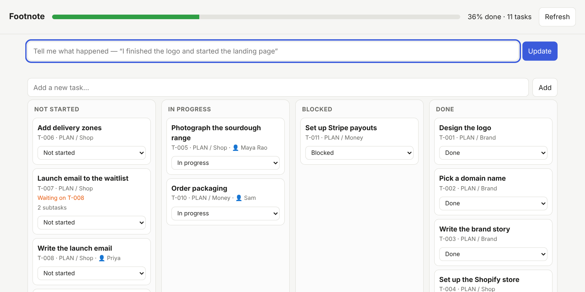
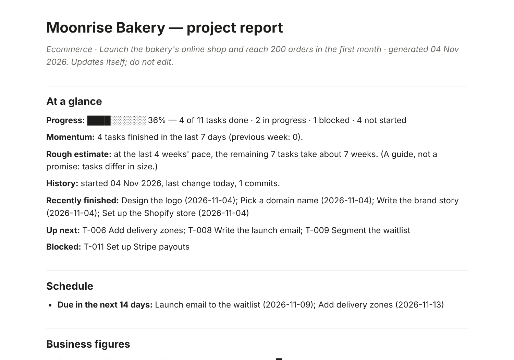

It fills itself in
Tasks move from what actually happens: a commit, a ticked checkbox in your docs, a sentence you type, or an update from your AI assistant.
git: “closes T-004”☑ ticked in PLAN.md“finished the logo”→T-004 · Done
Free · open source · runs on your computer
You do the work. Footnote keeps your plan, your progress, your numbers and “who did what” up to date, in the tools you already use. No more Friday-afternoon status updates.
$ npx footnote-app
Needs Python 3.9+. No account. No server of ours. Nothing leaves your computer unless you connect a tool.
Latest release: v0.1.0Apache-2.00 runtime dependencies
Not started
In progress
Done
Why Footnote
Most trackers are only as good as the last time someone remembered to update them. Footnote is built around the opposite idea.
Tasks move from what actually happens: a commit, a ticked checkbox in your docs, a sentence you type, or an update from your AI assistant.
It runs on your computer. We can’t see your data because we never receive it.
Edit in any of them and the others follow, in both directions.
Not just tasks: the story of the work.
Built so a wrong guess is cheap to fix.
The status update writes itself.
A founder can type a sentence. A developer can lean on git. A team lead can see who’s doing what without a stand-up. Your AI assistant can plan the work and report progress through it.
The difference
How it works
Footnote sits next to your project and notices what happens. You can also just tell it, in plain English.
It reads your checklists and documents, your commit history, your AI assistant’s updates, and your sales exports. Starting from nothing? Tell it what you’re building and it suggests a plan.
Tasks move when work starts and finishes. It records who did what, why decisions were made, what the system looks like, and what the numbers are doing.
Obsidian, Notion, Google Sheets, Excel, GitHub Issues, Trello, a simple web page, or a PowerPoint for your next review. Edit in any of them and it stays in sync.
A short “what changed since you last looked”, alerts for blocked or overdue work, and a daily, weekly or monthly report by email.
See it
These are screenshots of Footnote running on a small bakery’s online launch.


Features
Tasks are only the start. Footnote also keeps the story of the project.
Say “finished the logo, started the landing page”. It finds the tasks and asks when unsure.
Mention T-004 in a commit and it moves. “Closes T-004” or a merge finishes it.
Obsidian, Notion, Google Sheets, Excel or CSV, SQLite, GitHub Issues and Trello. Edit anywhere; changes merge.
Claude, Cursor, Codex, Gemini, Copilot and Windsurf can plan work and report progress through it.
It re-reads your project and draws how pages, APIs, data and services connect, and logs every change.
A journal of what was decided and why, so the answer isn’t lost when someone leaves.
Sales, visitors and spend from Shopify, WooCommerce, Stripe or CSV. If a number isn’t connected, it says so.
Sort income and spending, see profit by month and runway, and get alerted once when an invoice is overdue.
Who did what, who owns which area, who to ask, and a heads-up when two people touch the same files.
A manager report, a shareable HTML page, or a PowerPoint deck in one command.
A daily, weekly or monthly catch-up, with alerts for blocked or overdue work.
Every change is saved first, so undo reverses yours and the automatic ones.
How it compares
Keep Notion, Sheets or Trello if you like them. Here is how the approach differs. “Typically” describes common setups, not any one product.
| Footnote | A spreadsheet | A typical project tool | |
|---|---|---|---|
| Updates itself from your work | Yes: git, docs, plain English, AI assistants | By hand | Mostly by hand |
| Works inside the tools you already use | Yes: seven, with two-way sync | It is the tool | Its own app |
| Remembers architecture, decisions and numbers | Yes, built in | If someone writes them | Usually a separate wiki |
| Your data stays on your computer | Yes: no account, no server | Depends where you keep it | Typically hosted by the vendor |
| Undo for automatic changes | Yes: undo | Version history, if enabled | Varies |
| Cost and licence | Free, Apache-2.0 | Varies | Typically per seat |
In your day-to-day
The same tool, used five different ways. Each of these works today.
Monday, 8 a.m.
# get the report by email every Monday, with slides attached $ footnote add-notify --email-to you@example.com \ --smtp-host smtp.gmail.com --digest weekly \ --content report --attach deck
While you code
T-012 in a commit and the task moves. “Closes T-012” finishes it.# one-time: let your AI assistant use it $ footnote connect claude # who knows about checkout? $ footnote whois checkout/ Dev Raj: 14 changes, last active yesterday
No code, no git
T-004-brochure-v2.pdf and the task is marked in progress.footnote undo reverses it.$ footnote say "finished the brochure and started packaging" ✓ T-004 “Brochure”: In progress → Done ✓ T-005 “Packaging design”: Not started → In progress $ footnote deck client-review.pptx --for everyone
Leading a team
$ footnote catchup ## Finished T-014 “Payments” (Dev Raj) ## Heads-up app/checkout touched by Maya and Dev ## Stalled T-017 “Admin tables” (9 days)
Running yourself
$ footnote metrics-import bank.csv $ footnote invoice add --client Acme --amount 1200 --due "in 30 days" $ footnote report --for manager --html handover.html
Get started
You need Python 3.9 or newer (most computers have it; if not, python.org). That’s all: there’s nothing else to install.
npx footnote-app. There’s nothing to download (Python 3.9+ must be on your computer).footnote.pyz from the latest release and put it in your project folder. A checksum is published next to it.pip install . inside it.$ python footnote.pyz$ python footnote.pyz uiPrefer not to use a terminal? Double-click Start Tracker.command (Mac, Linux) or start-tracker.bat (Windows). If something seems off, doctor explains it in plain words.
Your data stays yours
It runs on your computer. We have no servers, no accounts and no way to see your data.
undo works on yours and on automatic ones.Honest limits
No software is perfectly secure or finished. Here is where we stand.
doctor --live checks yours, read-only.Read the full threat model and security policy.
Latest release
The first public release: board, git and AI-assistant updates, seven trackers, reports, slides, email digests and a team view. The installer is built identically every time and comes with a checksum.
Questions
No. You can use it by typing sentences, or just using the web page. Developers get extra features, but nothing requires them.
Nothing. It’s free and open source (Apache-2.0 licence).
Only to the services you connect, such as your Notion or your Slack. We run no servers and receive nothing. The optional AI help uses a command you choose and sees task titles and report figures, never your files.
Yes to both. Without git it notices changed files and the words you tell it. Without an AI assistant you just talk to it yourself.
It asks rather than guesses when unsure, and every change can be undone with footnote undo. Tasks you move by hand are never pushed back by automation.
Yes, by sharing one Notion database, Google Sheet, GitHub Issues list or Trello board. Everyone’s changes merge, and tasks a teammate adds appear for you with the same ID.
You still can: Footnote feeds them. The difference is that it fills them in from what actually happened, adds the architecture, decisions, numbers and “who did what”, and keeps the whole story in one report.
Contribute
You don’t have to write code. Confusing wording is a bug, and “I got stuck here” is one of the most valuable things you can send us.
Free, open source, and on your computer in about two minutes.